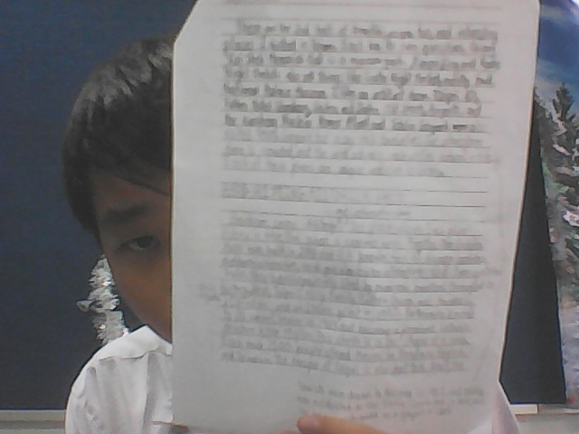

Untuk pelajaran Bahasa Inggris, kami harus membuat sebuah artikel dengan panjang 300 - 500 kata tentang suatu topik tentang Edutrip.
Dalam tugas ini terdapat beberapa tahap, yaitu:
1. Timeline
2. Prewriting
3. Drafting
4. Self and Peer Feedback
5. Ladder of Feedback
6. First Revision
7. Final Revision and Published Writing
Dalam tahap Timeline, kami harus mengisi sebuah tabel tentang kapan tahap-tahap di atas akan diselesaikan.
Di bawah ini terdapat gambar Timeline:

Dalam tahap Prewriting, kami harus membuat outline dengan mengisi hal-hal yang kami akan menulis di draf seperti judul, topik, pernyataan tesis dan hal-hal yang akan dijelaskan di dalam artikelnya.
Di bawah ini terdapat gambar Prewriting:


Dalam tahap Drafting, kami harus membuat draf berdasarkan outline prewritingnya.
Di bawah ini terdapat gambar Drafting:


Dalam tahap Self and Peer Feedback, kami dengan satu teman memeriksa draf masing-masing dengan menggunakan Proofreading Marks dan sebuah checklist yang disediakan dalam Gdocs di Assignment GC. Kami juga memeriksa draf sendiri dan memberikan saran.
Di bawah ini terdapat gambar Self and Peer Feedback:
Draf setelah Proofreading Halaman 1
Draf setelah Proofreading Halaman 2
Draf setelah Proofreading Halaman 3
.png)
Dalam tahap Ladder of Feedback, kami harus memberikan saran (Feedback) dengan menggunakan Ladder of Feedback di Gdocs.
Di bawah ini terdapat gambar Ladder of Feedback (Gambar yang atas merupakan Ladder of Feedback teman (Lathan) (saran olehku) dan Gambar yang di bawah merupakan ladder of Feedback saya (saran oleh Lathan)):
.png)
.png)
Dalam tahap First Revision, kami harus membuat revisi yang pertama dengan menggunakan saran yang diberikan oleh teman dan sendiri.
Di bawah ini terdapat gambar First Revision:
.png)
.png)
.png)
Dalam tahap Final Revision, kami harus membuat revisi lagi dengan menggunakan saran guru (Sir Dasril).
Kami juga harus mempublikasikan hasil karya dalam Canva (Published Writing).
Tahap ini diselesaikan maksimal 10 April 2025 dan pengerjaannya mulai pada 7 April 2025 sehingga pada 6 April 2025, tahap ini belum selesai.